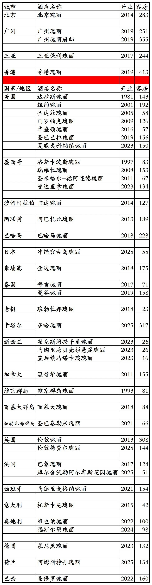
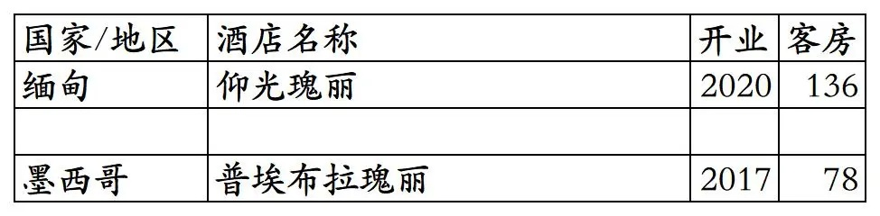
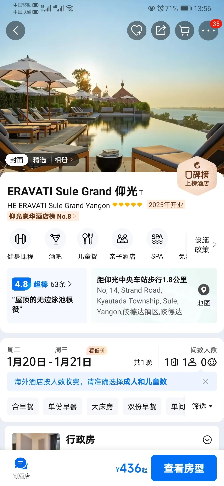
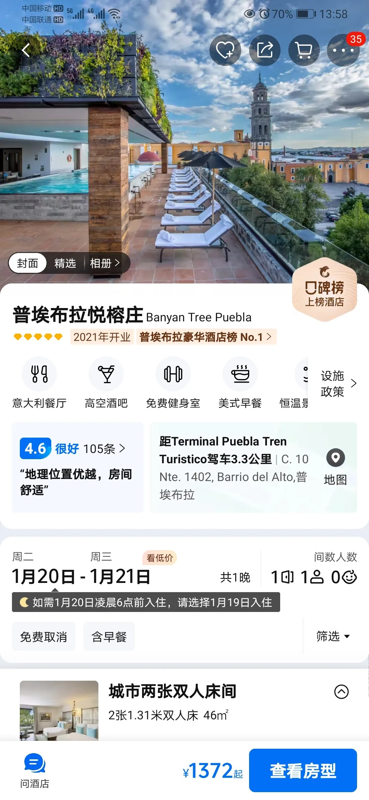
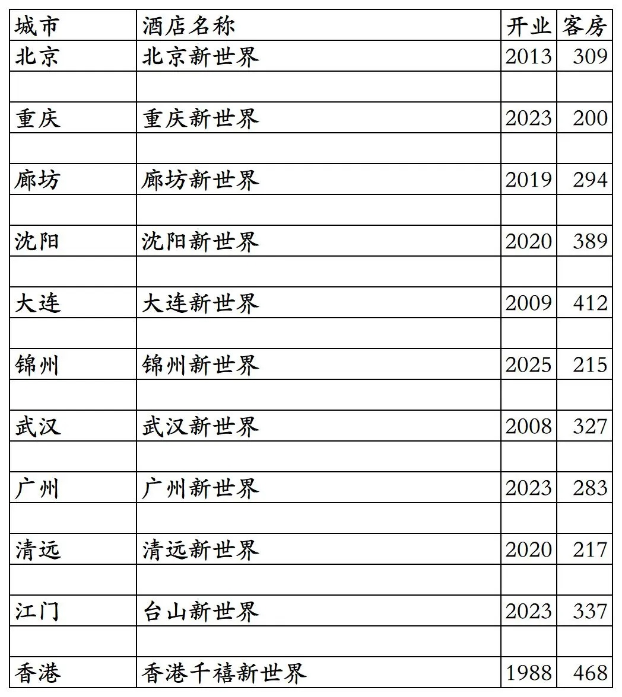
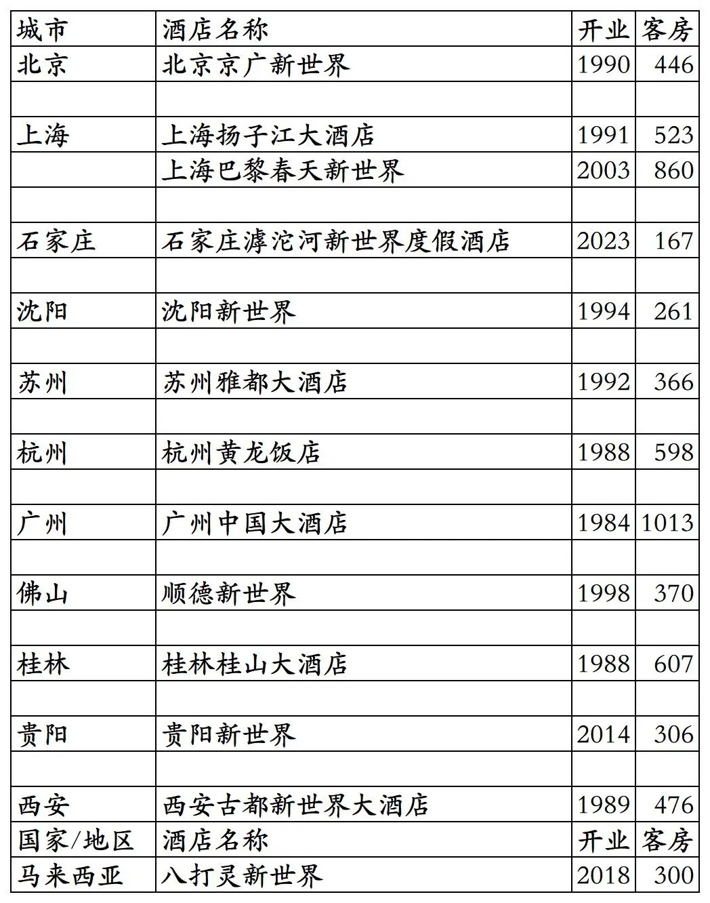
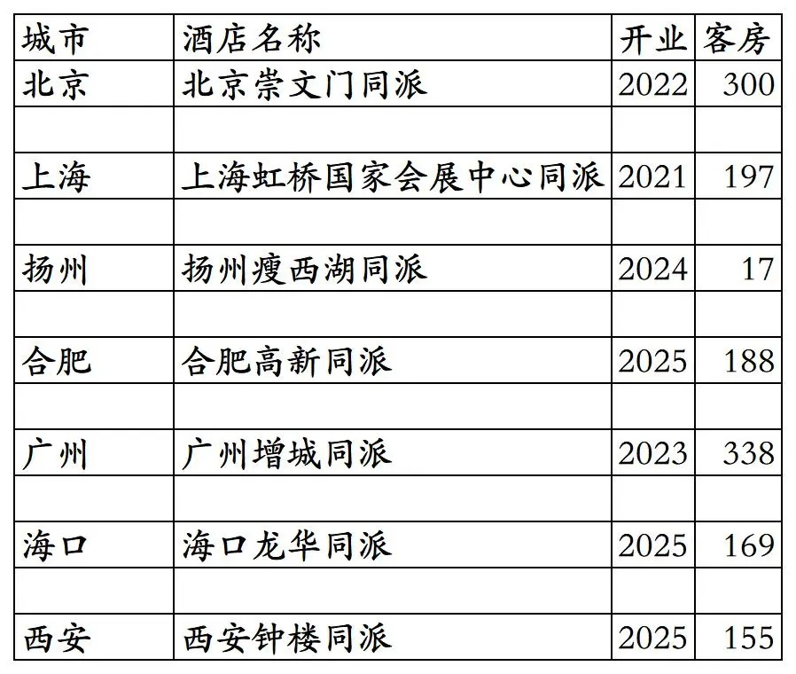
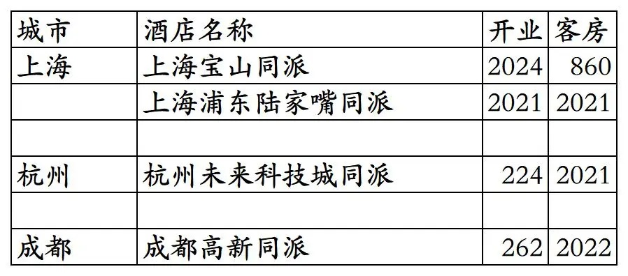

截至2025年12月31日，瑰丽旗下开业在营酒店共计66家。
瑰丽旗下酒店包括奢华五星酒店瑰丽、普通五星酒店新世界、中档酒店同派3个品牌。3家芊丽酒店已翻牌为新世界，芊丽品牌已成为过去时；之前的贝尔特酒店有的翻牌为同派有的退出，贝尔特品牌也已成为过去时。
2011年香港新世界酒店集团收购瑰丽酒店及度假村，2013年新世界酒店集团更名为瑰丽酒店集团。
大中华区4家瑰丽(不含广州瑰丽府邸)与国外12家瑰丽酒店可以在瑰丽酒店小程序预订，但无会员计划，其余26家国外瑰丽酒店不能在瑰丽酒店小程序预订。
国内新世界酒店和同派酒店可用在“新聚汇会员商城”小程序预订，享受新聚汇会员权益。
新聚汇会员分为初遇、相识、好友、知己4个等级。
另除了北京新世界酒店、沈阳新世界酒店、北京崇文门同派酒店外其余国内新世界酒店和同派酒店，都与丽呈有合作，可以在“丽呈会”小程序预订，享受丽呈会会员权益。
开业：新酒店开业或是原酒店翻牌开业时间；客房：客房数量。
瑰丽品牌43家酒店。

2家退出的瑰丽酒店(新世界收购瑰丽后开发的)。还有大约20家退出的瑰丽没有统计，是新世界收购瑰丽之前开业的，大多数在新世界收购瑰丽之前就已退出。
现在仰光瑰丽酒店已翻牌为400多元一晚的酒店，普埃布拉瑰丽已翻牌为悦榕庄。



16家新世界酒店。其中廊坊新世界、沈阳新世界、清远新世界是由芊丽品牌翻牌。

已退出/停业的国内新世界品牌酒店。包括几家由新世界管理未挂牌新世界品牌的酒店。
北京京广新世界就是现在北京瑰丽的前身，上海扬子江大饭店现在是上海扬子江丽笙精选，上海巴黎春天新世界现在是上海中山公园凯悦尚萃，石家庄滹沱新世界现在是石家庄滹沱宾馆，沈阳新世界(之前是三星级酒店，后来升级为四星级酒店)已于2013年拆除原地新建新世界名汇住宅，苏州雅都大酒店就是现在的苏州金陵雅都大酒店，顺德新世界已改为桔子水晶刚开业，贵阳新世界已改为贵阳恒世纪酒店。

7家同派品牌酒店。其中北京崇文门同派酒店为原北京贝尔特酒店改造翻牌。

已退出的同派酒店。
